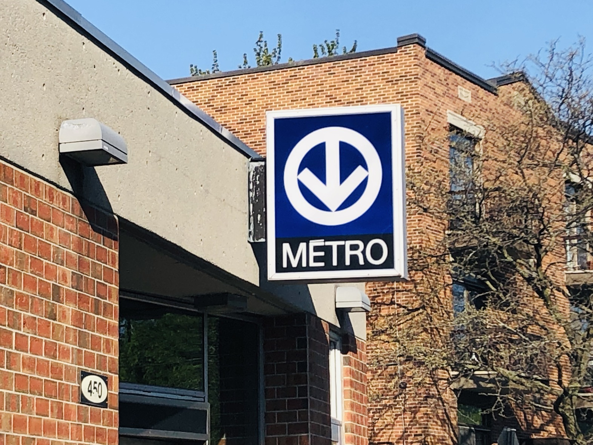
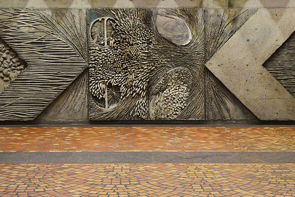
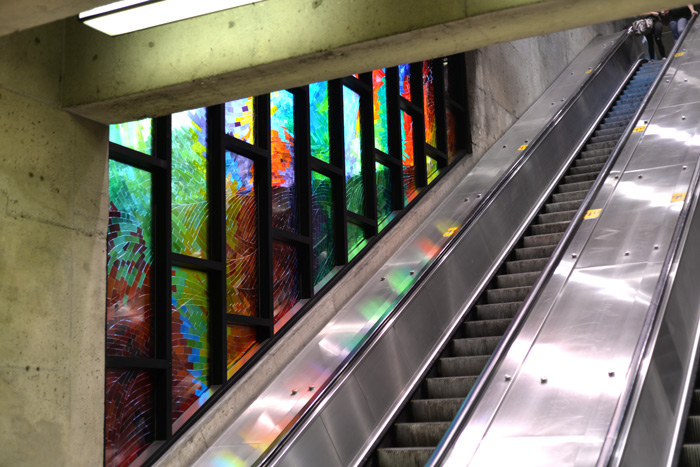
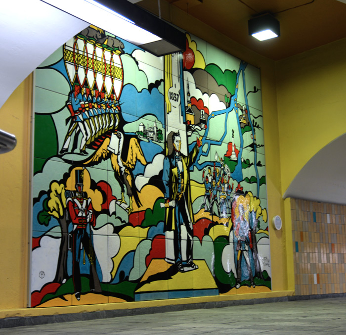
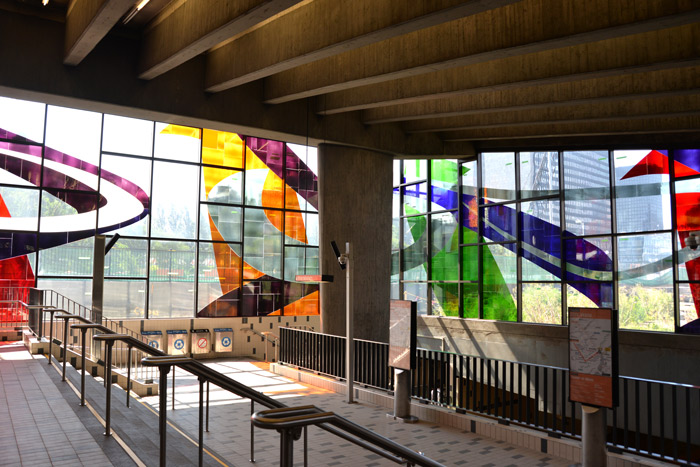
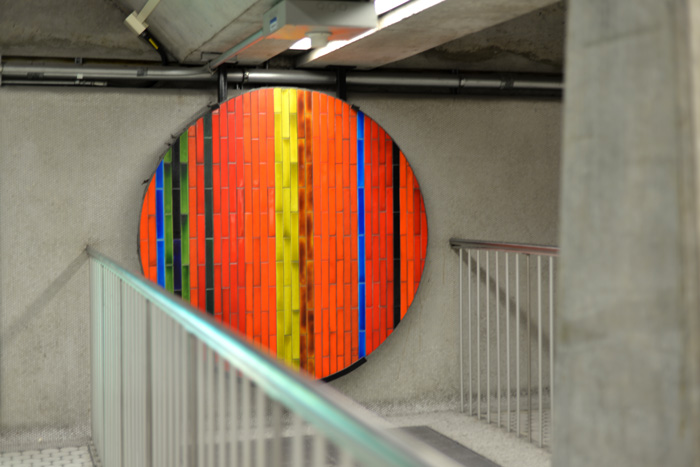
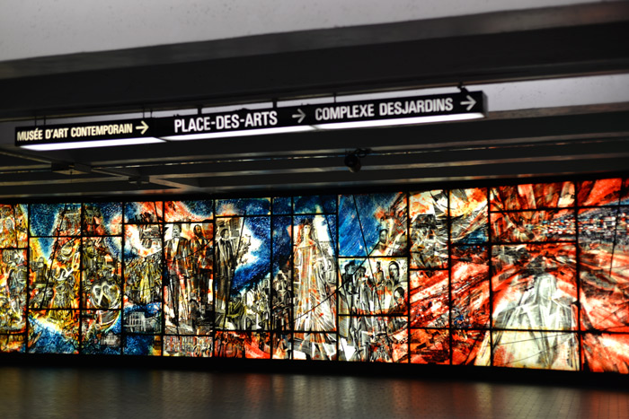

PUBLIC TRANSIT
Metro

The metro in Montreal is one of the main ways people get around the city. It has four lines: green, orange, yellow, and blue. It connects to lots of important places like downtown, universities, and shopping areas. The trains are electric and run underground, which is really helpful during the winter when it's super cold. Each station has a different design, and some even have cool artwork, which makes riding the metro more interesting. The metro is usually fast and comes pretty often, so it's convenient for getting to school, work, or just going out with friends. The STM, which runs the metro, also connects it to the bus system, so it's easy to switch between the two. The metro has been around since 1966 and is still growing, with new extensions being planned.
Stations as Art
Montreal's metro stations are renowned for their unique integration of public art. Each station showcases diverse styles, from murals to sculptures, reflecting Quebec's cultural identity. Local artists contributed to these installations, transforming what are usually mudane spaces into a moving art gallery that celebrates history, architecture, and creativity in everyday commutes.
(All of the background images are taken from tiles, mosaics, and art from metro stations.)





